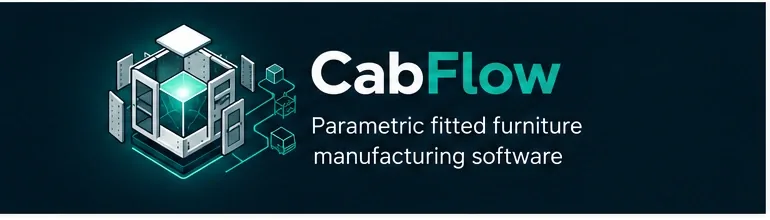

Design.
Parametric cabinets, materials, variables and rules connected to the commercial job.
Parametric fitted furniture manufacturing software
CabFlow is being built for cabinet and fitted-furniture manufacturers replacing ageing bespoke systems. It connects the commercial job to the cabinet model, factory output, operations and delivery without asking you to gamble the business on a big-bang rewrite.
In active product development, grounded in real cabinet-manufacturing workflows.

Parametric cabinets, materials, variables and rules connected to the commercial job.
Compile manufacturing intent, then adapt it for the machines and processes the factory actually uses.
Keep jobs, operational state, commercial context and factory reality part of one coherent workflow.
Plan runs, handle physical units and exceptions, and keep the office connected to what happened on the road.
Where generic software stops
Manufacturers do not only manage customers and orders. They carry years of knowledge about cabinet rules, materials, machining, production exceptions, dispatch and delivery. When that knowledge lives inside ageing software, spreadsheets and workarounds, replacing the system is an operational risk rather than a normal software upgrade.
The product model
Cabinet definitions, materials, fittings, variables and rules become explicit product knowledge instead of behaviour hidden inside one ageing application.
CabFlow separates the manufacturable result from customer and machine-specific output formats, so the cabinet model does not become trapped inside one machine contract.
Production, stock movement, dispatch and delivery contain real-world exceptions. The product direction is to make those states visible and auditable rather than force staff into fake jobs and workarounds.
Modernise without the leap of faith
The difficult part is not choosing a new framework. It is discovering which behaviours are business rules, which are machine contracts, which are customer-specific workarounds and which can finally be retired.
CabFlow's migration approach is based on evidence, regression fixtures and staged cutover. High-risk cabinet calculations and manufacturing outputs are proven before they are trusted with production.
Observe the live operation and recover the real rules.
Prove critical behaviour against known-good evidence.
Replace capability by capability with controlled cutover.
Improve the model instead of carrying every legacy compromise forward.
Designed for factory reality
The product model treats configurable fitted furniture as a first-class domain, not an attachment to a generic CRM.
Local relays can bridge machines and private factory resources without making them direct public-cloud dependencies.
Delivery and local workflows are being shaped around connectivity loss, deterministic retry and visible operational state.

Early product conversations
CabFlow is not being presented as finished multi-tenant SaaS today. We are building from proven manufacturing-domain knowledge and are interested in manufacturers facing the same operational problem.
Start a conversation